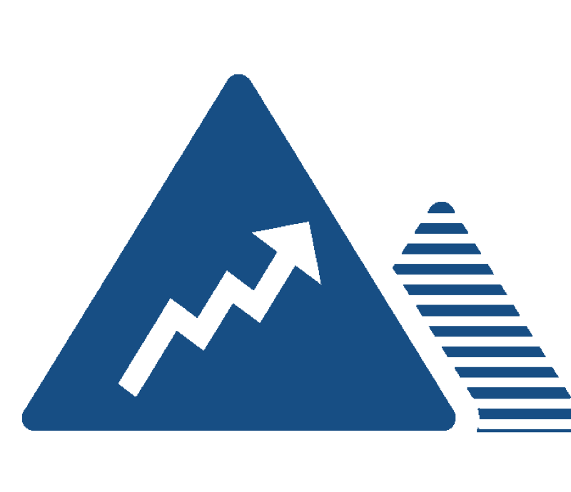
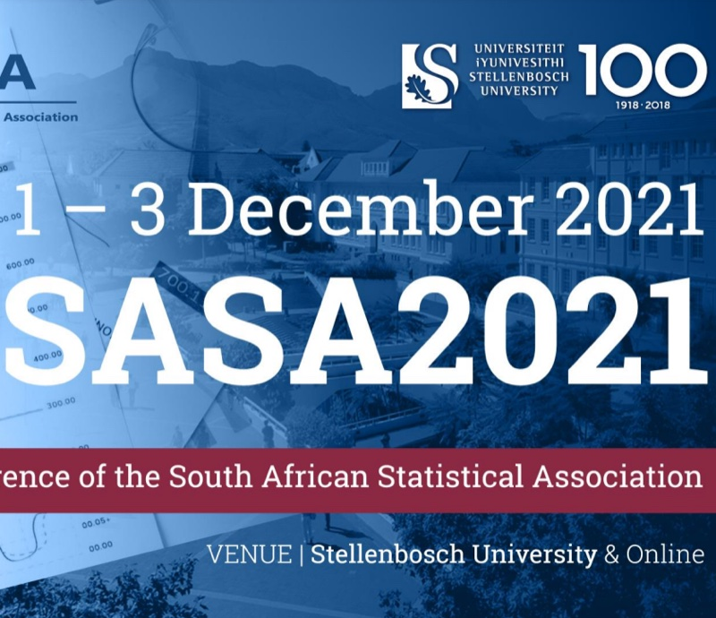
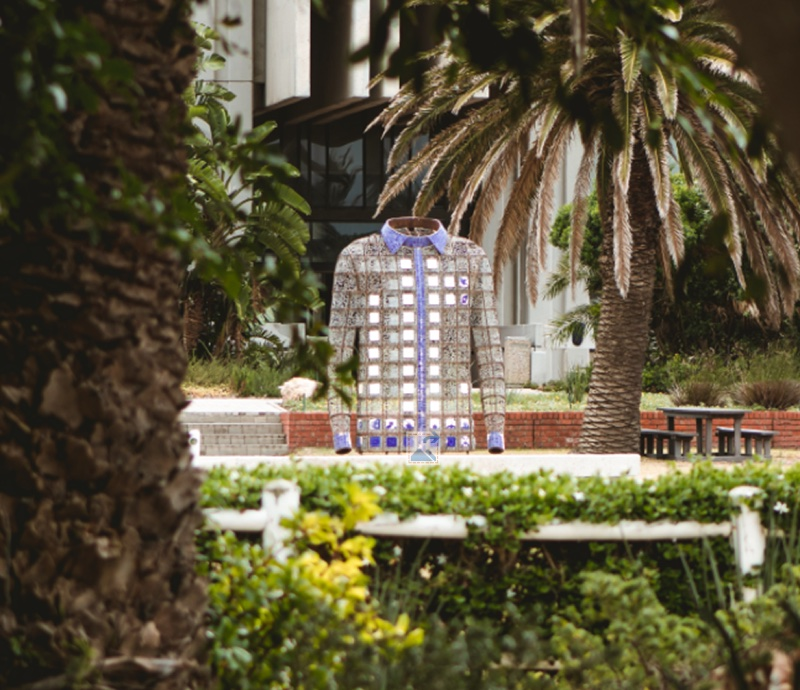
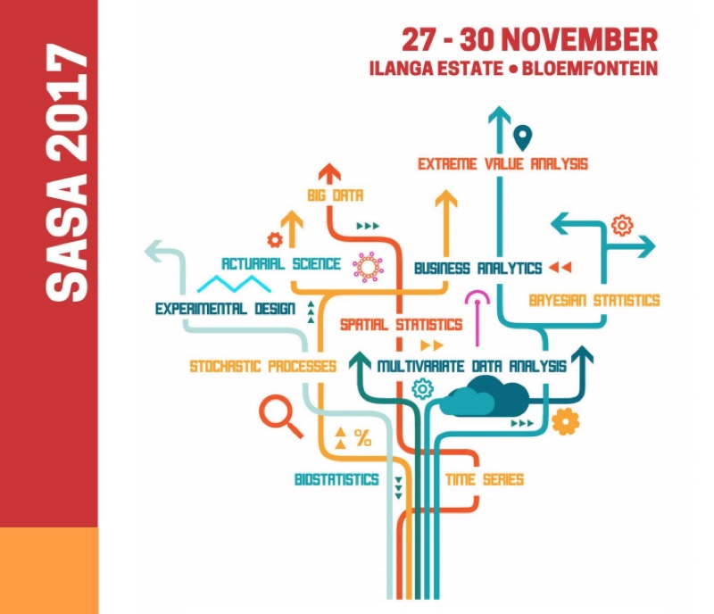
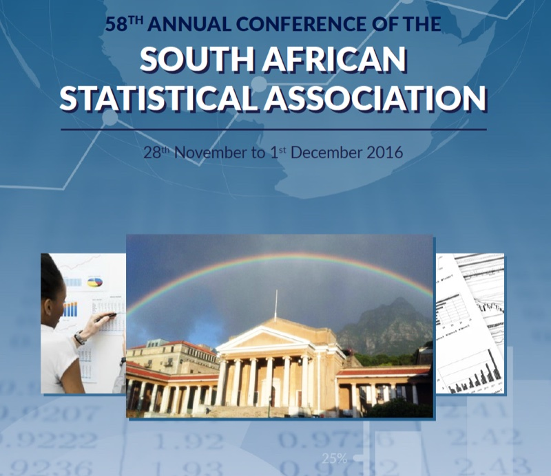
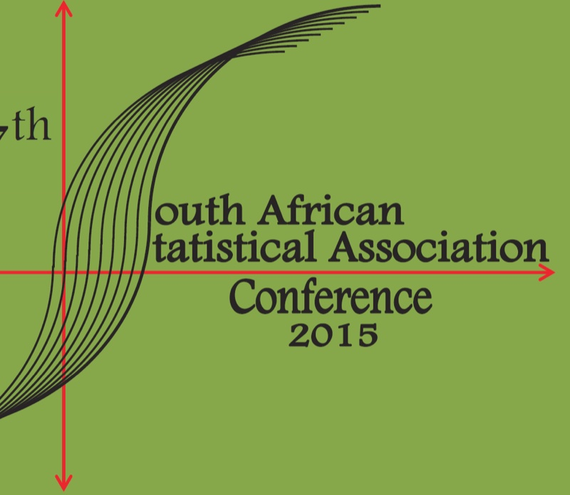
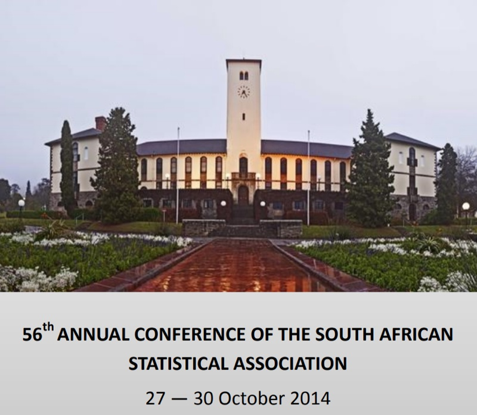

SASA Conferences
SASA holds its annual conference in late November or early December. The programme normally opens with two days of workshops, followed by a three-day conference.
Upcoming conference
SASA 2026
University of the Witwatersrand, Johannesburg (Birchwood Hotel and OR Tambo Conference Centre)
23 – 27 November 2026
Past conferences
SASA 2025
LOC Chair: Dr Neill Smit
Invited speakers: Prof Rafik Soyer (George Washington University), Prof Hadley Wickham (Posit PBC), Prof Sophie Dabo-Niang (University of Lille), Jacques Venter (ABSA), Prof Janet van Niekerk (KAUST), Prof Riaan de Jongh (NWU)
Sponsors: CoE-MaSS, NITheCS, NRF, NWU, SAS and SACNASP
SASA 2024
LOC Chair: Dr Humphrey Brydon
LOC: Prof Renétte Blignaut, Dr Retha Luus, Dr Philomene Nsengiyumva, Dr Julia Keddie, Ms Ronell Lombard Jacobus, Mrs Chanel Morkel
Plenary speakers: Prof Mohammad Arashi, Prof Carlos A. Coelho, Prof Tanja Verster, Prof Maxim Finkelstein, Mr Lucas van der Meer, Dr Alex Shabala
SASA 2023
LOC Chair: Prof Delia North
LOC: Dr Danielle Roberts, Dr Nombuso Zondo, Mrs Shakila Thakupersad, Mrs Arusha Desai, Prof Temesgen Zewotir, Prof Retius Chifurira, Prof Knowledge Chinhamu
Plenary speakers: Dennis Lin, Mark Glickman, Tertius de Wet, Maxim Finkelstein
SASA 2022

LOC Chairs: Dr Warren Brettenny, Dr Chantelle Clohessy, Prof Charl Pretorius, Prof Inger Fabris-Rotelli
Plenary speakers: Prof Ruth Etzioni, Prof Robert Gramacy
Keynote speakers: Prof Sheetal Silal, Dr Mark Nasila, Mr Ashwell Jennecker, Prof Pravesh Debba, Prof Renette Blignaut
SASA 2021

LOC Chair: Prof Sugnet Lubbe
Plenary speakers: Prof Jonathan Crook, Prof Gareth James, Dr Ali Joglekar, Prof Saralees Nadarajah, Prof Emmanuel Lesaffre, Dr McElory Hoffmann, Dr Johan van der Merwe
SASA 2019

LOC Chair: Prof Gary Sharp
Invited speakers: Professor Tim Swartz, Professor Deborah Nolan and Professor Jennifer Priestly
SASA 2018
LOC Chair: Dr Eva Rapoo
Invited speakers: Professor Louise Ryan and Professor Berthold Lausen
SASA 2017

LOC Chair: Mr Frans Koning
Invited speakers: Professor Hansjoerg Albrecher and Professor Lixing Zhu
SASA 2016

LOC Chair: Prof Francesca Little
Invited speakers: Professor Marie Hušková and Professor Trevor Hastie
SASA 2015

LOC Chair: Dr Inger Fabris-Rotelli
Invited speakers: Professor Din Chen, Walter Rademacher and Dr Robert N. Rodriguez
SASA 2014

LOC Chair: Dr Lizanne Raubenheimer
Invited speakers: Professor Ivette Gomes and Professor Simos Meintanis
SASA 2013
LOC Chair: Prof Maseka Lesaoana
Invited speakers: Professor Ray Chambers, Professor James Cochran, Dr Bradley Jones and Professor Peter McCullagh
SASA 2012
LOC Chair: Dr Johan Hugo
Invited speakers: Professor Nicholas Fisher and Professor Jeffrey Racine
SASA 2011
LOC Chair: Dr Pravesh Debba
Invited speakers: Professor Narayanaswamy Balakrishnan, Professor Dipak Dey and Professor Alfred Stein